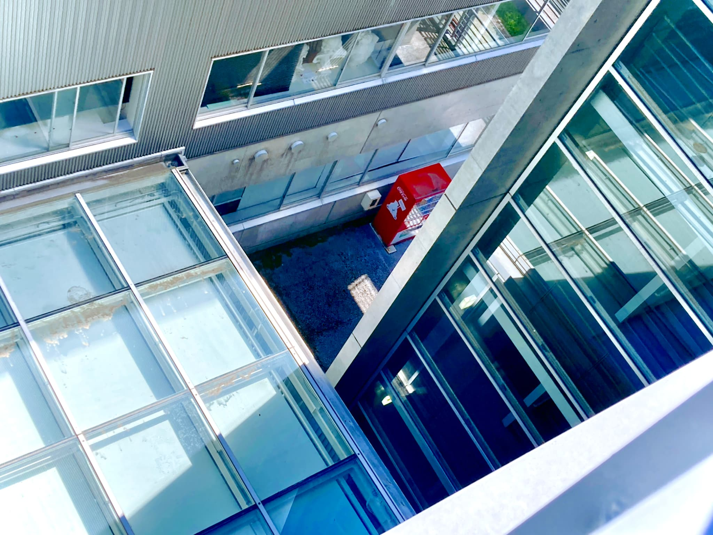
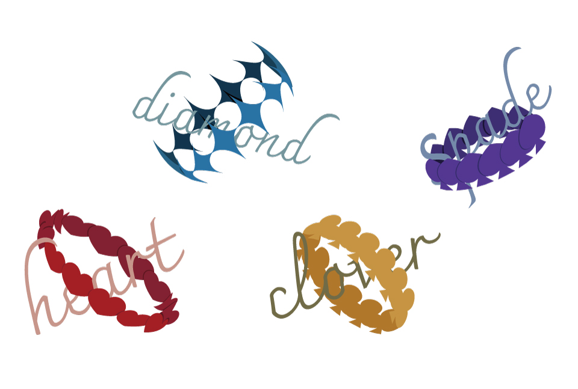
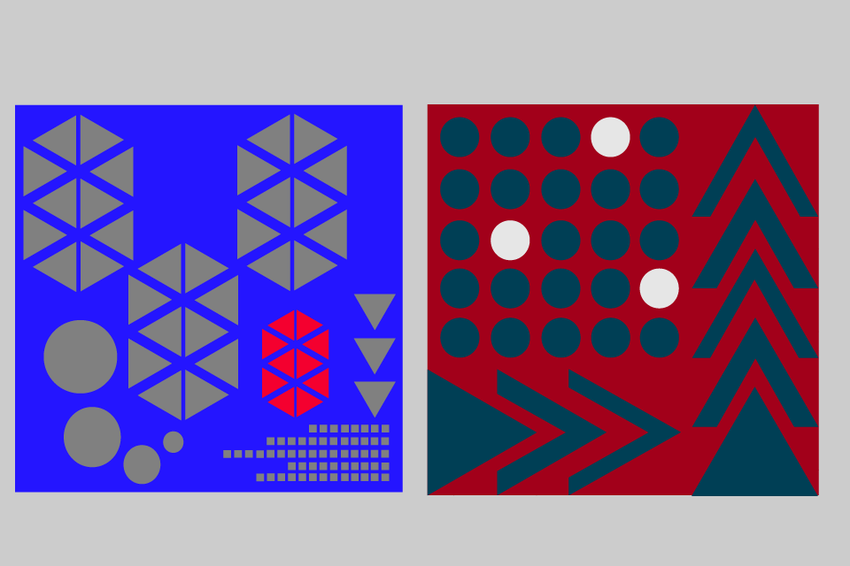
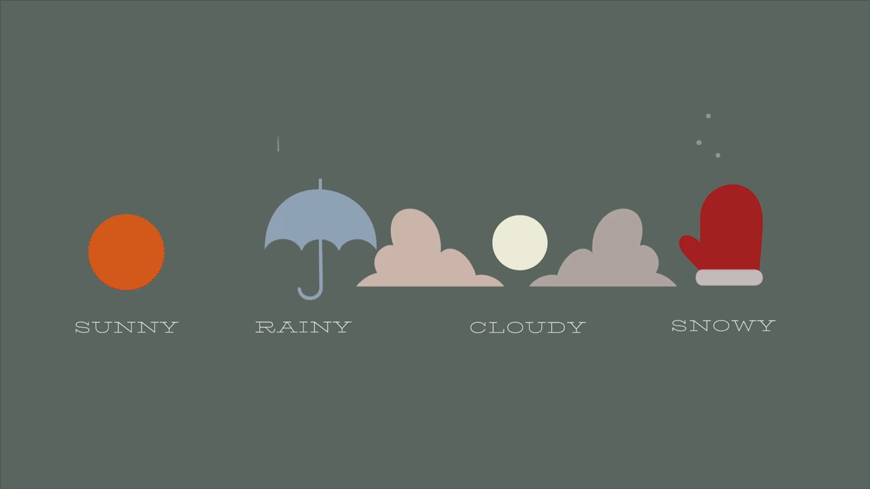
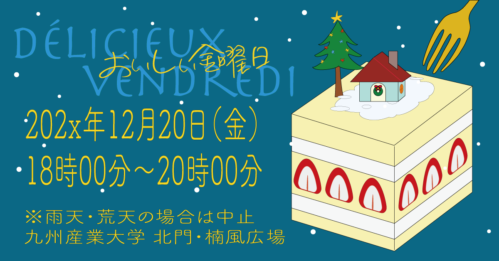

-

課題作品。課題テーマは大学内の好きなところです。iphoneで撮影。
-

課題作品。トランプのそれぞれのマークシンボルです。Illustratorで作成。
-

課題作品。正円と正三角形のみを使用してデザインをする課題です。Illustratorで作成。近未来を意識しました。
-

課題作品。お天気アイコンです。Illustrator、aftereffectで作成。憂鬱な天気でも少し気分が晴れるように子どもが見てもわくわくするようなデザインを意識しました。私が眩しいものが苦手なのでそのような人でも見やすいよう優しい色合いにしました。
-

課題作品。クリスマスイベント2024のポスターです。Illustrator、aftereffectで制作。粉砂糖を雪に見立てました。